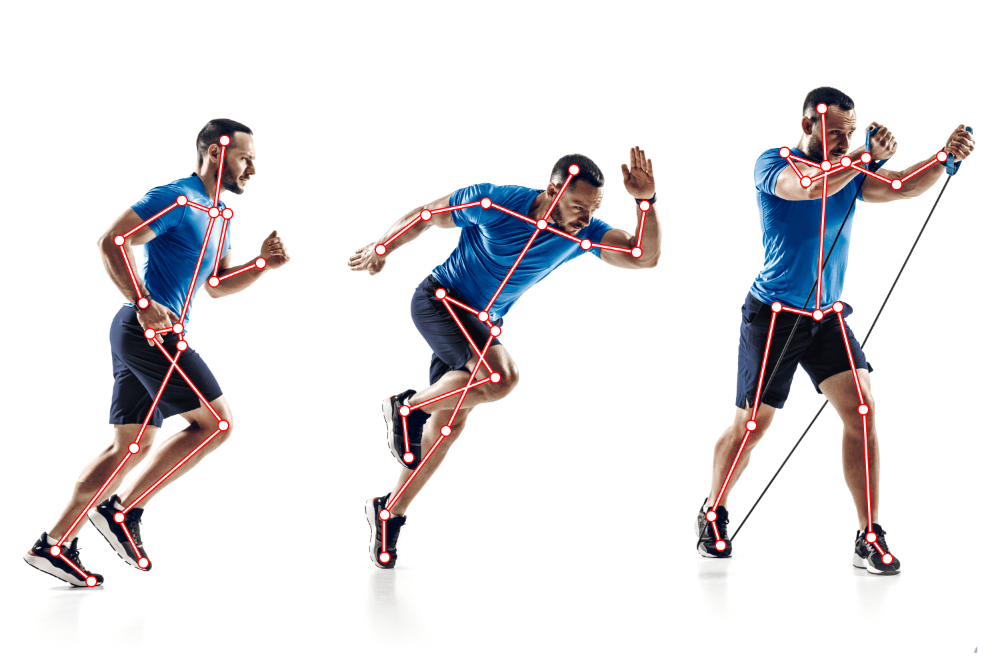

This page focuses on the concrete algorithms that make real-time fall detection possible on ordinary cameras and edge hardware.
Most current systems start with a pose estimator. Two widely used options are:
MediaPipe provides a lightweight model that outputs 33 body landmarks in real time even on mobile CPUs. It is popular for prototypes and on-device applications because it requires no GPU and has a small memory footprint.[3]
YOLO (You Only Look Once) family models first detect the person, then a second network or an integrated head predicts keypoints. Recent lightweight variants (YOLOv8-pose, YOLOv10-n, Fast-YOLO-FD) are optimized for edge devices and can reach high frame rates while keeping model size under a few megabytes.[4]

A surprisingly effective feature is the angle of the torso relative to the vertical. When a person is standing or sitting upright the angle is near 90°. During a fall the angle rapidly moves toward 0° (horizontal).
In the accompanying practical project for this course, a threshold on this angle (combined with a short “stillness” period) is used to trigger an alarm.
Because a fall is a sequence, many research systems feed a short window of joint coordinates or derived features into:
A 2024–2025 trend is the combination of a lightweight pose estimator with an optimized LSTM that can run entirely on a Raspberry Pi or Android box while keeping false-alarm rates low.[5]
Instead of sending raw video, systems commonly convert the person into:
Only these abstracted representations (or a short redacted clip after a fall) are transmitted. This design was emphasized in the University of Alberta / Spxtrm AI system.[2]